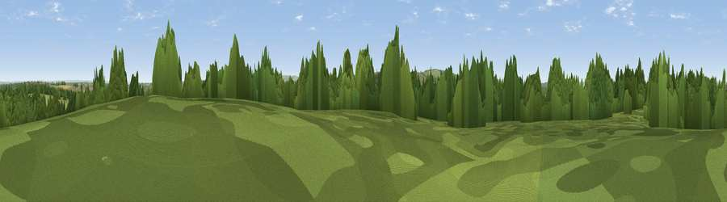

Camp Hill
#31604 in England · top 62% of its area beats it · near NewportThe view, rendered

A 360° render of this exact spot computed from the terrain model, tree cover and land cover — summer colours, afternoon light, calibrated against photographs of famous viewpoints. Real trees, hedges and buildings will differ in detail.
The panorama
Grey silhouette: terrain skyline in each direction (720 bearings, Earth curvature and refraction included). Dashed green: skyline with trees (+15 m) and buildings (+8 m) as obstacles. Blue strip: how far the ground is visible on each bearing.
Where the view opens
Wedge length = distance to the farthest visible ground on that bearing (vegetation-aware). Rings at 10, 25 and 50 km.
What fills the view
42% woodland · 39% grassland · 10% cropland · 7% built-up · 2% water
Angular shares of the visible panorama (visual magnitude), not map area. Landscape diversity 0.53 (0–1 Shannon).
Key numbers
More beautiful places nearby
The staircase of upgrades: each row has a higher view potential than everything closer. Driving times are estimates from straight-line distance, calibrated against real road routing — check an actual route before setting out.
| Place | Direction | Drive | Score |
|---|---|---|---|
| Viewpoint near Carisbrooke | S · 2 km | ~6 min | 72.1 |
| Viewpoint near Gatcombe | S · 5 km | ~11 min | 72.3 |
| Viewpoint near Arreton | ESE · 7 km | ~14 min | 74.1 |
| Viewpoint near Chillerton | S · 7 km | ~15 min | 78.3 |
| Limerstone Down | SSW · 8 km | ~16 min | 84.5 |
| Mottistone Down | SW · 9 km | ~18 min | 87.2 |
| St Catherines Hill | S · 13 km | ~24 min | 87.6 |
| Viewpoint near Chale | S · 14 km | ~26 min | 88.3 |
50.71195, -1.32471 · source: dobih hill · position refined by local search. Computed location — check access rights before visiting.